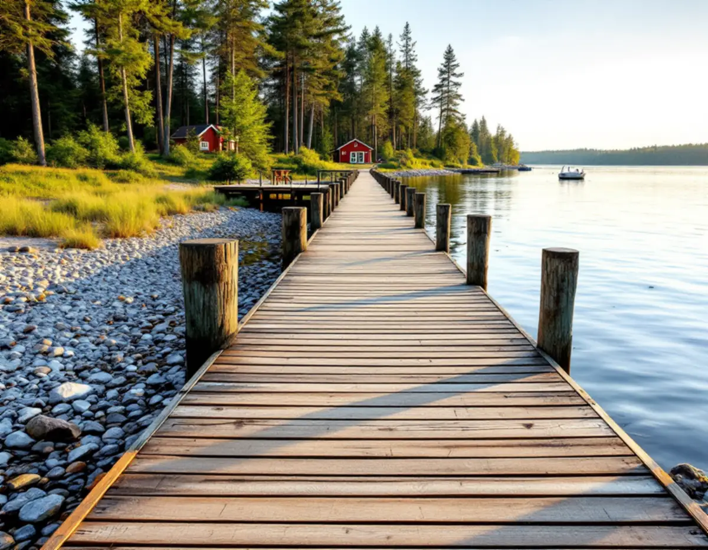
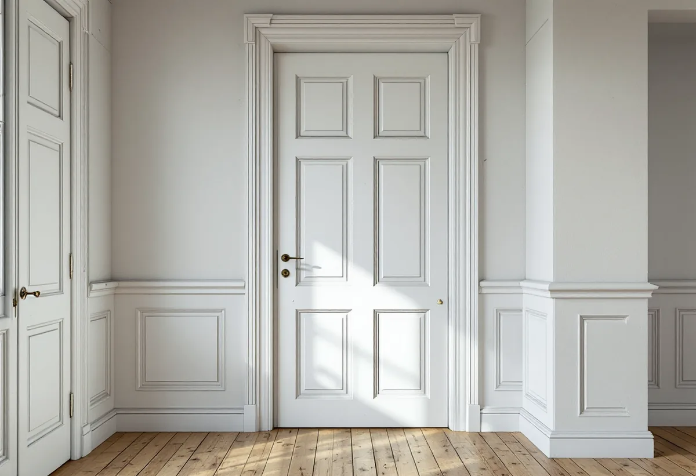

Kartor och frågor
Vi går igenom detaljplan, kulturmiljökarta, strandskydd och avståndet till Roslagsbanan.
Österåker har enligt kommunen en lång kuststräcka, hundratals öar och många sjöar. Mycket av det som ska byggas här ligger nära vatten, och mycket av det som ska lagas sitter i äldre hus. Geal Entreprenad AB gör snickeri i Åkersberga, på öarna och på landsbygden, från bryggor och altaner till lister, foder och innerdörrar.

Kommunens sida om bryggor och sjöbodar skiljer tydligt på att renovera och att bygga nytt. Har du en lagligt tillkommen brygga får du renovera den utan strandskyddsdispens, så länge den inte ändrar utseende, form eller storlek. Att riva en brygga och bygga en ny kräver däremot dispens först. Arbete i vattnet kan kräva en anmälan om vattenverksamhet.
För en ny, enkel brygga och för flytbryggor krävs strandskyddsdispens. En större brygga med omkring tio båtplatser räknas som småbåtshamn och kräver både bygglov och dispens. En sjöbod är en komplementbyggnad som kräver dispens och ofta bygglov.
I praktiken byter vi därför ofta trall, reglar och beslag på en befintlig brygga i samma mått, i stället för att göra den större. Strandskyddet gäller vanligtvis 100 meter från strandlinjen och på vissa platser i kommunen 300 meter.

I kommunens bygglovsguide finns frågor som visar om ett hus kan vara kulturhistoriskt värdefullt även om det inte är utpekat i kulturmiljökartan. Är huset byggt före 1920? Har det bevarad planlösning, kakelugnar, lister och foder, innerdörrar och takmålningar? Har det kvar ursprungliga fönster, dörrar och fasadmaterial? Svarar du ja kan huset vara värdefullt.
Flera av frågorna gäller snickerier. Gamla dörrfoder, golvlister och fyllningsdörrar är just det som lätt försvinner vid en renovering. Vi tar ner, märker och sätter tillbaka det som går att spara, och tillverkar nya delar efter de gamla profilerna där något saknas.
Kommunen skriver att alla ändringar ska göras varsamt, oavsett husets ålder och oavsett om åtgärden kräver lov. Lovfria åtgärder får inte heller utföras på byggnader som har skyddsbestämmelser i detaljplanen.
Kommunens altansida är uppdaterad efter lagändringen den 1 december 2025. Inom detaljplan krävs inget bygglov för en altan som är högst 1,8 meter och ligger inom 3,6 meter från en byggnad, eller högst 1,2 meter längre bort. Är altanerna på tomten tillsammans större än 50 kvadratmeter ska de följa detaljplanens bestämmelser. Utanför detaljplan finns inga mått att följa.
I kulturhistoriskt värdefulla områden och för byggnader som är skyddade i detaljplan kan en altan ändå kräva bygglov. Då ber kommunen om en beskrivning och ritning till bygglov@osteraker.se för bedömning.
Även en lovfri altan ska enligt kommunen anpassas till omgivningen och vara varsam mot byggnaden, och dess storlek och placering får inte bli en betydande olägenhet för grannarna. Ska altanen sedan glasas in blir den ett uterum. Kommunens sida om uterum förklarar att ett uterum som sitter ihop med bostadshuset räknas som en tillbyggnad, medan ett fristående uterum eller växthus räknas som en komplementbyggnad. Båda kan byggas utan lov om vissa krav är uppfyllda, och nära vatten kan strandskyddsdispens behövas.
Bygglovsguiden påminner om att bygglovfria åtgärder ska placeras mer än 30 meter från Roslagsbanans spårmitt om Trafikförvaltningen inte har godkänt något annat. Den ber dig också räkna med tidigare friggebodar, attefallsåtgärder, skärmtak och byggnader som saknar bygglov eller startbesked, även äldre svartbyggen. Allt det påverkar hur mycket du får bygga enligt de nya reglerna.
Är du osäker på tomtgränsen kan kommunens geodataenhet fastställa den och staka ut byggnaden innan du bygger. För en gäststuga eller ett förråd nära gränsen slipper du då risken att behöva flytta det efteråt.
Vi går igenom detaljplan, kulturmiljökarta, strandskydd och avståndet till Roslagsbanan.
Vi tittar på bryggan, altanen eller huset och vad som kan sparas.
Du får ett skriftligt förslag med arbete och material på separata rader.
Krävs kommunens bedömning tar vi fram beskrivning och ritning.
Trall, stomme, lister, foder eller dörrar byggs och lagas i befintlig form.
Vi går igenom arbetet med dig och lämnar en sammanställning.
Enligt Skatteverket ger det inget rotavdrag att reparera och underhålla båtbryggor, staket eller murar. En altan som byggs ihop med huset ger avdrag, och det gör även byte och reparation av dörrar, dörrlås och handtag och att reparera eller byta fönster.
Avdraget är 30 procent av arbetskostnaden, högst 50 000 kr per person och år och högst 75 000 kr tillsammans med rutavdrag. Material och resor ingår inte. Vi drar avdraget direkt på fakturan.
För en brygga styr skicket under trallen och hur svårt det är att arbeta från vattnet. I ett äldre hus påverkar det hur mycket av listverk och dörrar som går att spara och hur många profiler som måste tillverkas. Platsbesöket är gratis och du får ett skriftligt kostnadsförslag.
Altan, väggar, dörrar och inredning.
Snickare i Stockholm →Takbyte, takbesiktning och plåtarbeten.
Takläggare i Österåker →Svinninge, sommarvillor och sportstugor.
Takrenovering i Österåker →VA-utbyggnad, öar och vattensmarta val.
Badrumsrenovering i Österåker →Skärgårdshus, fritidshus och villor i Österåker.
Fasadrenovering i Österåker →Varsamhet, kulturvärden och kustlägen i Österåker.
Fönsterbyte i Österåker →Jämna golv och färre trösklar.
Golvläggare i Österåker →Sommarvillor, röda stugor och efterkrigsvillor.
Målare i Österåker →